하드디스크(HDD)는 메모리(RAM)와 달리 기계적으로 움직이는 암(Arm)과 회전하는 원판(Platter)으로 구성되어 있습니다. 메모리가 전자 펄스로 즉시 데이터를 뽑아내는 반면, 디스크는 헤드를 원하는 트랙까지 기계적으로 이동시켜야만 합니다.
디스크의 접근 시간(Access Time)은 다음의 세 가지 지연으로 구성됩니다:
운영체제의 디스크 스케줄링 알고리즘은 오직 저 끔찍한 첫 번째, “탐색 시간(Seek Time)을 어떻게 하면 최소화할까?” 에 모든 목적을 두고 설계되었습니다.
대기열(Queue) 큐에 요청된 블록 번호가 “98, 183, 37, 122, 14, 124, 65, 67” 순으로 들어왔을 때, 이를 FCFS(먼저 온 순서)로 처리하면 헤드가 디스크 좌우를 미친 듯이 왕복 횡단하게 되어 시스템 효율이 바닥으로 추락합니다.
이를 해결하기 위해 운영체제는 궤적 자체를 통제합니다.
최신의 SSD(Solid State Drive)는 내부에 모터나 기계팔이 없습니다. 따라서 위에서 본 탐색 지연 파괴 알고리즘이 필요 없으며, FCFS 방식으로도 거의 균일한 성능을 냅니다. 하지만 SSD 플래시 블록은 “데이터를 덮어쓸 수 없고 반드시 블록을 통째로 깎아내야만(Erase) 다시 쓸 수 있다” 는 치명적인 전기적 특성이 있습니다. 이를 조율해 주는 것이 SSD 내장 컨트롤러인 FTL(Flash Translation Layer) 입니다.
RAID(Redundant Array of Independent Disks)는 여러 개의 저렴한 물리적 디스크를 묶어서, 운영체제(커널)에는 “1개의 거대한 논리 디스크” 처럼 속이면서 속도 향상과 데이터 백업을 동시에 달성하는 전설적인 시스템 규격입니다.

Parity 블록을 여러 드라이브에 분산 저장하여, 하나의 드라이브 손실을 감내하면서도 RAID 0과 같은 읽기 속도 이점을 공유합니다.UNIX/Linux 아키텍처 설계에서 디렉터리 역시 궁극적으로는 그저 “하나의 파일”일 뿐입니다. 단, 평문 텍스트가 적혀있는 것이 아니라, [파일 이름 : i-node 번호]의 메타데이터 매핑 장부가 적혀 있는 특수한 파일입니다. 시스템 프로그래머는 다음과 같은 방식으로 이를 해독합니다.

#include <stdio.h>
#include <dirent.h>
int main() {
DIR *dp;
struct dirent *dirp;
// 1. 디렉터리 포인터를 커널에서 획득하여 스트림을 개방한다
if ((dp = opendir("/home/user/workspace")) == NULL) {
return 1;
}
// 2. 디렉터리의 끝에 도달할 때까지 한 줄씩 읽어(readdir) 구조체로 반환받는다.
while ((dirp = readdir(dp)) != NULL) {
// 구조체 내부에 하위 파일의 이름과 i-node 정보가 들어있다.
printf("i-node 번호: %ld | 이름: %s\n", dirp->d_ino, dirp->d_name);
}
closedir(dp); // 메모리 누수 방지를 위한 자원 반환
return 0;
}
opendir(), readdir()을 조합한 반복 루프를 통해 커널 자료구조인 디렉터리 장부에 직접 접근할 수 있다.